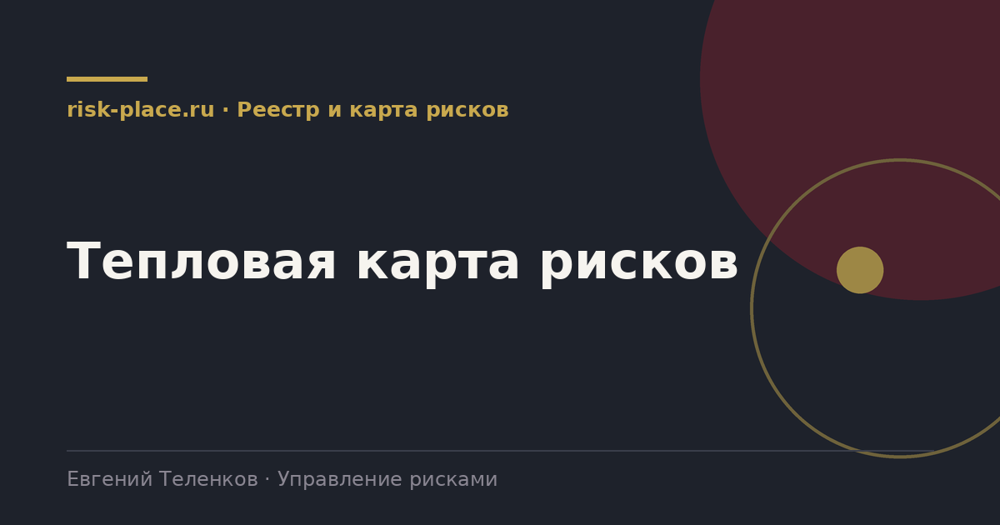

risk-
risk-Утвердить шкалы
- Пять уровней вероятности и пять уровней влияния с описанием каждого уровня словами и числами. Без этого точки расставит субъективность
Главная · Библиотека · Реестр и карта рисков · Тепловая карта рисков
Библиотека · Реестр и карта рисков
Карта это язык разговора с руководством. На одном листе видно, где компания стоит и куда движется.

Тепловая карта это поле, где по одной оси отложена вероятность, по другой влияние, а каждый риск нанесен точкой. Зоны раскрашены от зеленой к красной. Смысл в том, что руководителю не нужно читать шестьдесят строк, чтобы понять картину, достаточно посмотреть на правый верхний угол.
Карта не заменяет реестр и не является методом оценки. Это способ представления уже посчитанного. Если оценки в реестре слабые, красивая карта только замаскирует проблему.
Самое ценное на карте это стрелки. Точка на прошлом квартале, точка на текущем, стрелка между ними. Тогда разговор на комитете меняется с «у нас восемь красных рисков» на «за квартал два риска ушли из красной зоны, один пришел, вот почему».
Для этого нужно хранить историю оценок, а не перезаписывать последнюю. Это единственное требование к реестру, которое делает карту по-настоящему управленческим инструментом.
Частые вопросы
Одна форма для любого вопроса
Расскажем о ближайших датах, предложим формат под ваш состав участников и назовем порядок бюджета.
Предпочитаете почту — напишите на info@risk-place.ru. Адрес: Москва, улица Скаковая, 32с2.